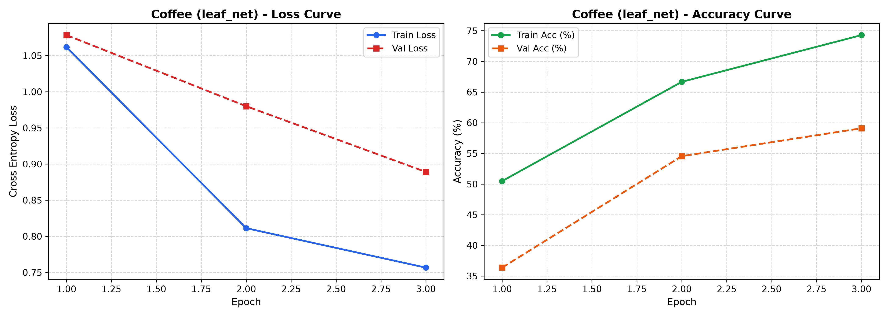
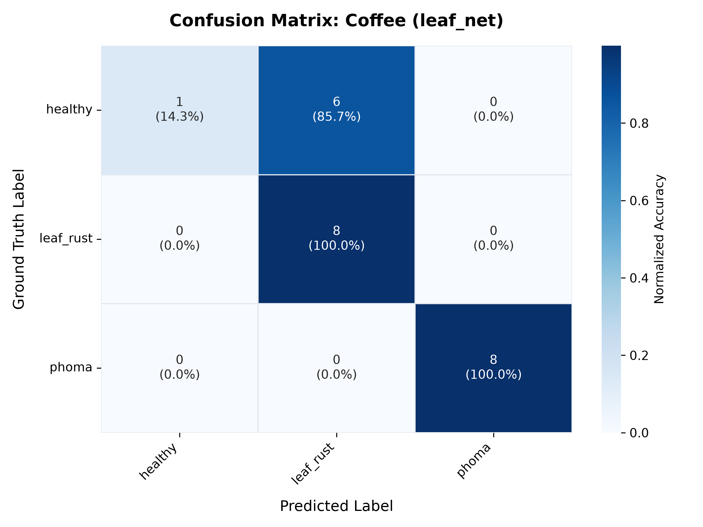

🌿 ขั้นตอนที่ 1: สำรวจและแบ่งชุดข้อมูล (Dataset & Stratified Splitting)
เลือกชนิดพืชที่ต้องการทดลองฝึกสอน และกำหนดสัดส่วนการแบ่งข้อมูลแบบ Stratified เพื่อความสมดุลของทุกคลาส
⚙️ ตั้งค่าการแบ่งข้อมูล
📊 ตารางการกระจายตัวของคลาส (Class Distribution)
🖼️ ตัวอย่างภาพในชุดข้อมูล (Sample Leaf Images)
ตัวอย่างภาพถ่ายจริงจากโฟลเดอร์สำหรับพืชแต่ละชนิดและอาการโรค
🧠 ขั้นตอนที่ 2: สถาปัตยกรรมโมเดลและไฮเปอร์พารามิเตอร์ (Model Architecture)
เลือกโครงข่ายประสาทเทียมที่เหมาะสมกับการประมวลผล ทั้งบนคลาวด์และบอร์ดสมองกลฝังตัว (Edge AI)
MobileNetV2
Inverted Residuals & Linear Bottlenecks
โครงสร้างโมเดลขนาดเล็กที่ให้ความแม่นยำสูงมาก ประมวลผลเร็ว เหมาะสำหรับระบบฟาร์มอัจฉริยะที่ต้องการวิเคราะห์โรคพืช ณ จุดเกิดเหตุ
ResNet18
Deep Residual Learning (18 Layers)
โครงสร้าง Residual Connections มาตรฐานงานวิจัย คอมพิวเตอร์วิทัศน์ ให้ฟีเจอร์ที่ละเอียดและเสถียร เหมาะกับการวิเคราะห์โรคที่ซับซ้อน
LeafNet (Custom CNN)
4-Stage Lightweight Convolutional Network
โครงข่ายคอนโวลูชันขนาดกะทัดรัดที่พัฒนาขึ้นเฉพาะสำหรับเวิร์กช็อปนี้ ออกแบบให้สามารถแปลงลงบอร์ดไมโครคอนโทรลเลอร์ ESP32 ได้โดยตรง
⚙️ ปรับแต่งไฮเปอร์พารามิเตอร์การฝึกสอน (Hyperparameters)
🚀 ขั้นตอนที่ 3: สั่งฝึกสอนโมเดลจริง (Live Model Training Pipeline)
เลือกฝึกสอนบนเครื่องคอมพิวเตอร์ของคุณผ่าน XAMPP Backend หรือคลิกเปิดรันบน Google Colab เพื่อใช้ GPU T4 ฟรี
💻 Terminal Log Stream (ผลการทำงานสด)
พร้อมเริ่มการฝึกสอน... กรุณากดปุ่ม "เริ่มต้นฝึกสอนบนเครื่องจริง" หรือเปิดรันใน Google Colab
📈 กราฟประวัติการฝึกสอน (Loss & Accuracy Curves)

outputs/checkpoints/<crop>_<backbone>_best.pth
📊 ขั้นตอนที่ 4: ประเมินผลโมเดลบนชุดทดสอบ (Evaluation & Confusion Matrix)
ทดสอบโมเดลกับภาพที่ไม่เคยผ่านการฝึกสอนมาก่อน (Unseen Test Set 15%) และสร้างแผนภาพความสับสน (Confusion Matrix)
🗺️ แผนภาพความสับสน (Confusion Matrix Heatmap)

📋 รายงานผลการประเมินแยกตามคลาส (Classification Report)
| คลาส (Class Name) | Precision | Recall | F1-Score | Support |
|---|---|---|---|---|
| healthy | 1.00 | 0.14 | 0.25 | 7 |
| leaf_rust | 0.57 | 1.00 | 0.73 | 8 |
| phoma | 1.00 | 1.00 | 1.00 | 8 |
🔬 ขั้นตอนที่ 5: ห้องทดลองทำนายภาพโรคพืชจริง (Live Inference Playground)
อัปโหลดภาพใบพืชของคุณเอง หรือเลือกภาพตัวอย่างจากคลังเพื่อทดสอบทำนายผลแบบเรียลไทม์
📤 เลือกภาพสำหรับทดสอบทำนาย
ลากไฟล์ภาพมาวางที่นี่ หรือคลิกเพื่ออัปโหลด
รองรับไฟล์ JPG, JPEG, PNG (ขนาดไม่เกิน 10MB)
🎯 ผลการวิเคราะห์และทำนาย (Prediction Result)
กรุณาเลือกหรืออัปโหลดภาพทางด้านซ้าย แล้วกดปุ่ม "วิเคราะห์และทำนายโรคพืช"
🎯 ขั้นตอนที่ 6: ตรวจจับตำแหน่งรอยโรคและผลผลิตด้วย Bounding Box (Object Detection Studio)
ระบบตรวจหาพิกัดรอยโรค (Lesion Localization), ตีกรอบความเสียหายพืช, เครื่องมือวาด Label กำหนดกรอบวัตถุ (Roboflow Style) และส่งออกพิกัดมาตรฐาน YOLO / COCO
📤 1. เลือกภาพหรืออัปโหลด
ลากไฟล์ภาพใบพืชมาวางที่นี่ หรือคลิกเพื่ออัปโหลด
รองรับไฟล์ภาพ JPG, PNG สำหรับตรวจจับ Bounding Box
🖼️ 2. ผลการตีกรอบ Bounding Box (Visual Canvas)
0 วัตถุที่ตรวจพบกรุณาเลือกภาพจากฝั่งซ้าย แล้วกดปุ่ม "สแกนและตีกรอบ Bounding Box ทันที"
📦 ขั้นตอนที่ 7: ส่งออกโมเดลสำหรับ Edge AI & IoT (ONNX / TorchScript)
ส่งออกโมเดลสำหรับนำไปใช้งานจริงบนอุปกรณ์ IoT, บอร์ด ESP32-CAM, Raspberry Pi, หรือ Web Application
📁 ไฟล์โมเดลที่ส่งออกพร้อมใช้งาน (Exported Artifacts)
💻 ตัวอย่างโค้ดนำไปรันบน Edge Device (Python / ONNX Runtime)
import onnxruntime as ort
import numpy as np
from PIL import Image
# 1. โหลดโมเดล ONNX บน Raspberry Pi / Jetson
session = ort.InferenceSession("coffee_leaf_net_best.onnx")
# 2. ปรับขนาดภาพใบไม้ (224x224) และ Normalize
img = Image.open("leaf.jpg").convert("RGB").resize((224, 224))
img_data = (np.array(img).astype(np.float32) / 255.0 - [0.485, 0.456, 0.406]) / [0.229, 0.224, 0.225]
input_tensor = np.transpose(img_data, (2, 0, 1))[np.newaxis, ...].astype(np.float32)
# 3. รัน Inference ทำนายโรคพืชทันที
outputs = session.run(None, {"input": input_tensor})
class_id = np.argmax(outputs[0])
print(f"ผลการทำนาย Class ID: {class_id}")